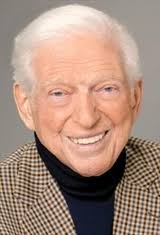
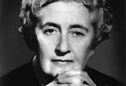

sydney sheldon
Master of suspence and drama. His book like "if tomorrow comes" and "tell me your dreams" keep me hooked from start to finnish
Anna huang
Writter of *Twisted series* her stories mix romance with raw emotions and her character feel so real , it is scary recently she wrote about ethiopian character i highly recomend you guys.

Agatha Christie
The diva the absolute Queen of Mystery. her clever plot and iconic detective like Hercule poirot always keep me guessing till the end.